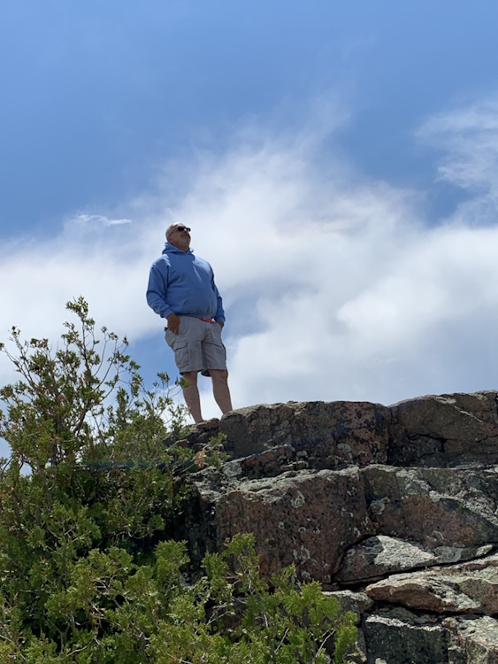

About Me
Welcome to my personal portfolio website! With a lifelong passion for construction and a wealth of experience, I have established myself as a distinguished construction supervisor. From the tender age of a little boy, I immersed myself in job sites, eagerly assisting my father with new additions to our home. This early exposure paved the way for my remarkable journey in the industry.
At the age of 11, I embarked on my professional journey with Maple Leaf Construction, starting out by washing trucks. Over the course of an impressive 33 years, I not only acquired an extensive knowledge of construction but also forged invaluable relationships throughout New England's construction community. My tenure with Maple Leaf Construction was a testament to my dedication, expertise, and unwavering commitment to excellence.
Continuing my pursuit of excellence, I currently thrive as a valuable member of the Harvey Construction team. My vast experience, combined with a strong work ethic and meticulous attention to detail, consistently contribute to the success of each project I oversee. Beyond the construction site, I embody the qualities of a loving father, devoted son, and supportive brother. With my infectious personality and natural charisma, I effortlessly brighten any room, making me the life of the party and a true people person.